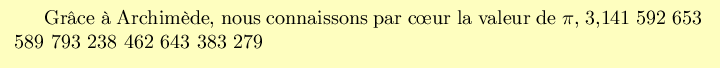

This presentation is licensed under a Creative Commons Attribution-NonCommercial-ShareAlike 3.0 Unported License.
Or how to optimise LATEX for the fun factor.
Let us begin with the PITA for all script langages, encoding.
Let us suppose we want to print

which translates to
Thanks to Archimedes, we know the value of π, 3.1415926535.
For some reasons which you will guess in the course of the presentation, the examples are in French. In addition, suppose that, despite what we want to print, we cannot remember the numeric value for π.
Remark: the yellowish colour does not come from some old paper on which I have printed the document. It comes from the fact that I have hard-copied the DVI or PDF output and then colorised the hard-copy file with The Gimp, so the hard-copies will stand out from the englobing HTML text.
We have three encodings at our disposal, 7-bit ASCII, ISO-8859 and UTF-8.
With the earliest versions of TEX, we had to use 7-bit ASCII. This was no piece of cake for native French (or German, or Spanish, or etc) speakers.
file ex1.tex
\documentclass[a4paper]{article}
\begin{document}
Gr\^ace \`a Archim\`ede, nous connaissons
par c\oe{}ur la valeur de $\pi$,
% que j'aime a faire apprendre un nombre utile aux sages
% 123 1 1234 1 12345 123456789 12 123456 12345 123 12345
3,1415926535.
\end{document}
For the OE ligature (in the text above) and for the cedilla, there are two ways to code it. The first one, which I dislike, is c\oe ur for "cœur" and re\c cu for "reçu", the whitespace being used to end the \oe (o-e ligature) command or the \c (cedilla) command, but without representing the end of a word. The second way, which I prefer, is c\oe{}ur and re\c{c}u, in which the end of the command is not marked with whitespace, but with a curly brace and in which whitespace thus marks the end of a word. The choice between these two syntaxes is triggered neither by a command-line parameter, nor by an option inserted into the source file. They are both available at all time, the choice is just a personal preference of the author when writing the LATEX file.
Starting with version 3 of TEX, it was possible to use ISO-8859-1, or latin-1 if you prefer.
file ex2.tex
% -*- encoding: iso-8859-1 -*- \documentclass[a4paper]{article} \usepackage[T1]{fontenc} \begin{document} Grâce à Archimède, nous connaissons par c\oe{}ur la valeur de $\pi$, % que j'aime à faire apprendre un nombre utile aux sages % 123 1 1234 1 12345 123456789 12 123456 12345 123 12345 3,1415926535. \end{document}
The comment tagged with -*- instructs Emacs to use ISO-8859-1 encoding, but LATEX does not care. The use of the fontenc module has the same effect, except that this time, LATEX gets the message while Emacs does not care. Some Vim users have told me that Vim automatically detects the proper encoding and that the use of a mode line for this purpose is not advised. I did not check, because the Vi clone I use is Emacs in Viper mode.
Now, the accented vowels and the "ç"'s are easily typed, but there are still problems with the "oe" ligatures.
But now, in the second decade of the XXIth century, Unicode and UTF-8 are becoming prevalent.
file ex3.tex
% -*- encoding: utf-8 -*- \documentclass[a4paper]{article} \usepackage[T1]{fontenc} \usepackage[utf8]{inputenc} \begin{document} Grâce à Archimède, nous connaissons par cœur la valeur de $\pi$, % que j'aime à faire apprendre un nombre utile aux sages % 123 1 1234 1 12345 123456789 12 123456 12345 123 12345 3,1415926535. \end{document}
The problem of "oe" ligatures is now solved. It should be possible to enter directly the π character (U+3C0), but I have not found how. In addition I still have problems with "°" for "degree" (U+B0). Anyway, we still cannot obtain the numerical value for π.
Even if TEX and LATEX are programming languages, you must admit their syntax is not pleasing. It is not easy to loop or to compute arithmetic formulas. And you cannot obtain the numerical value for π. Fortunately, there is...
LuaTEX, also known as LuaLATEX, is a rewrite of the TEX engine, with a few additional features.
Indeed, the document writer has access to a Lua interpreter inside the document. For example:
file ex4.tex
% -*- encoding: utf-8 -*-
\documentclass[a4paper]{article}
\usepackage[T1]{fontenc}
\usepackage[utf8]{luainputenc}
\begin{document}
Grâce à Archimède, nous connaissons
par cœur la valeur de $\pi$,
\directlua{tex.sprint(math.pi)}.
\end{document}
The document is generated with:
lualatex ex4
that's all! Note that Lua gives more digits than the mnemonic verse.

A few remarks.
Actually, using the embedded Lua interpreter goes far beyond generating a few chunks of LATEX source and inserting them into the document. You can write Lua functions and register them as callbacks, to alter the way the typesetting engine works, or to process "attributes" (a new feature of the LuaTEX engine). I leave that with the wizards and the gurus, just generating chunks of text is sufficient for me to have fun.
LuaTEX is still beta. The stable version is promised for some time in 2012. But for persons like me who do not want to tweak the engine, I think the current version is stable enough and we have nothing to fear about incompatibilities and regressions.
A paradox: the Lua authors make it clear that the core Lua will not support UTF-8. You can still be assured that if you feed UTF-8 strings to Lua, Lua will deal with them as byte strings and will return them to you without alterations. But dedicated char functions, like substring extractions and regular expressions consider that you use ISO-8859-1 or even, in some cases, ASCII. The paradox is that LuaLATEX only deals with UTF-8, which is not and will never be the native encoding of Lua.
There are a few interferences between the syntax analysis by LATEX and the analysis by Lua. If you code your Lua script on several lines, with cautious indent, Lua will get a one-liner. Especially, if you write a comment thus:
\directlua{-- we print pi's numerical value
tex.sprint(math.pi)
}
Lua will receive only a long single comment and thus will generate nothing. Yet, you can use a percent for comments:
\directlua{% we print pi's numerical value
tex.sprint(math.pi)
}
The corollary of this remark is that it is very difficult to use the modulus operator and the regular expressions in a Lua script embedded into a LuaLATEX document.
The advice is to split the file into a Lua-only source file and a LATEX-mainly source file. The Lua-only file will be parsed only by Lua, not by LATEX. Let us forget LATEX typesetting for a moment and let us use a command line REPL. If we want to print π using a mnemonic poem we can write:
file ex5.lua
-- -*- encoding: latin-1 -*-
--[[
Function to convert a mnemonic poem into a number
lg_part_ent : number of digits of the integer part
poeme : string containing the poem's text
returns a string representation of the number
]]
local transco = { ["à"] = "a", ["è"] = "e", ["é"] = "e", ["ê"] = "e",
};
function mnemo_to_num(lg_part_ent, poeme)
-- get rid of accents
poeme = string.gsub(poeme, ".", transco);
-- extract the number's digits
local nombre = "";
for mot in string.gmatch(poeme, "%a+") do
nombre = nombre .. (string.len(mot) % 10)
end
-- separate the integer part from the decimal part
local part_ent = string.sub(nombre, 1, lg_part_ent)
local part_dec = string.sub(nombre, lg_part_ent + 1, string.len(nombre))
-- insert whitespace every three digits
part_ent = string.reverse(part_ent)
part_ent = string.gsub(part_ent, "(%d%d%d)", "%1 ")
part_ent = string.reverse(part_ent)
part_dec = string.gsub(part_dec, "(%d%d%d)", "%1 ")
-- rebuild the number
nombre = part_ent .. "," .. part_dec
return nombre
end
file ex5-bis.lua
-- -*- encoding: latin-1 -*-
dofile "ex5.lua";
print(mnemo_to_num(1, [[
Que j'aime à faire apprendre un nombre utile aux sages,
Immortel Archimède, artiste, ingénieur,
Qui, de ton jugement, peut priser la valeur ?
Pour moi, ton problème eut de pareils avantages.
]] ))
This example shows you how to include an external Lua file into another Lua file. It shows you also the syntax for multiline strings, enclosed between "[[" and "]]". The use of "backslash-n" within double quotes is allowed, but it is tedious we you have many long lines. And now, let us return to LuaLATEX:
file ex5.tex
% -*- encoding: utf-8 -*-
\documentclass[a4paper]{article}
\usepackage[T1]{fontenc}
\usepackage[utf8]{luainputenc}
\begin{document}
Grâce à Archimède, nous connaissons
par cœur la valeur de $\pi$,
\directlua{
dofile "ex5.lua";
tex.sprint(mnemo_to_num(1, "
Que j'aime a faire apprendre un nombre utile aux sages,
Immortel Archimede, artiste, ingenieur,
Qui, de ton jugement, peut priser la valeur ?
Pour moi, ton probleme eut de pareils avantages.
"))}
\end{document}
Two remarks. First, the string transmitted by LATEX to Lua contains no accented letter, because the ex5.lua script expects an ISO-8859-1 string (the letters of which ex5.lua immediately converts to ASCII) and the ex5.tex document's encoding is UTF-8. Secondly, the transmitted string is delimited by double quotes, not double square brackets, because anyhow the string will be flattened to a single line and the newlines will be replaced by plain spaces when LuaLATEX executes Lua code.
Thus, it is possible to have a powerful and nice algorithmic language when typesetting a LATEX document. The examples above are simplistic, but in actual documents, you can have a much more complex processing scheme with loops, or with reading a database or accessing the Internet. The few elements of Lua that I know make me think that Lua is nice, but I still prefer Perl.
Actually, this is not one interpreter which is embedded in LuaLATEX, but two! There is a MetaPost interpreter in addition to the Lua interpreter. MetaPost is a script language to draw pictures, derived from the font description language METAFONT. With the original LATEX implementation, it was a separate mpost executable which would compile a separate toto.mp source file and generate one or more PostScript files toto.1, toto.2, toto.3 and so on. The pictures were included into the LATEX document when the latex program was run. So you had to write either a script or a makefile to run the mpost command and then the latex command. Now, with LuaLATEX, everything is coded in the same source file:
file ex6.tex
% -*- encoding: utf-8 -*-
\documentclass[a4paper]{article}
\usepackage[T1]{fontenc}
\usepackage[utf8]{luainputenc}
\usepackage{luamplib}
\begin{document}
Grâce à Archimède, nous connaissons
par cœur la valeur de $\pi$,
\directlua{tex.sprint(math.pi)}.
Et remercions également ce mathématicien anonyme
qui nous a donné l'équation~:
zéro plus zéro égale, la tête à Toto~!
\begin{mplibcode}
beginfig(1);
z1 = (-15, 10); % oeil gauche
z2 = ( 15, 10); % oeil droit
rayon = 5;
largeur_egale = 1.5 * rayon;
grosrayon = 30;
% zero
draw ((0, rayon) .. (rayon, 0) .. (0, - rayon) .. (- rayon, 0) .. cycle) shifted z1;
% plus
draw (0, rayon) -- (0, - rayon);
draw (- rayon, 0) -- (rayon, 0);
% zero
draw ((0, rayon) .. (rayon, 0) .. (0, - rayon) .. (- rayon, 0) .. cycle) shifted z2;
% egale
draw ((-largeur_egale, 0) -- (largeur_egale, 0)) shifted (0, -2 * rayon);
draw ((-largeur_egale, 0) -- (largeur_egale, 0)) shifted (0, -3 * rayon);
% la tete a Toto
draw (grosrayon, 0) .. (0, grosrayon) .. (- grosrayon, 0) .. (0, - grosrayon) .. cycle;
endfig;
\end{mplibcode}
\end{document}
And the document is generated with a single command:
lualatex ex6

I restate my previous conclusion. Thus, it is possible to have two powerful and nice algorithmic languages when typesetting a LATEX document. The examples above are simplistic, but in actual documents, you can have a much more complex processing scheme with loops, in MetaPost as well as in Lua, or with reading a database or accessing the Internet in Lua. The few elements of Lua that I know make me think that Lua is nice and I like MetaPost, but I still prefer Perl.
Fortunately, there is...
Perltex is not a new typesetting engine, rival to LuaTEX. It is a glue script between the TEX engine and a Perl script. Perltex is not available on CPAN, but you can find it on CTAN (Comprehensive TEX Archive Network) which is nearly as rich.
The source file looks like:
file ex7.tex
% -*- encoding: utf-8 -*-
\documentclass[a4paper]{article}
\usepackage[T1]{fontenc}
\usepackage[utf8]{inputenc}
\usepackage{perltex}
\perlnewcommand{\pinum}[0]{ 4 * atan2(1, 1) }
\begin{document}
Grâce à Archimède, nous connaissons
par cœur la valeur de $\pi$, \pinum.
\end{document}
And the generation is run with:
perltex --nosafe ex7.tex
if you want a DVI file or with:
perltex --latex=pdflatex --nosafe ex7.tex
if you want a PDF file. This gives you:

A few remarks.
As you can guess, the Perl statements defined with \perlnewcommand are compiled and executed with an eval. The default option is to run this eval in a sandbox, thanks to the Safe.pm module. The --nosafe parameter allows you to use a plain eval provided the author of the Perl function is the same as the author of the LATEX document. If your document uses a Perl script of dubious origin, you should use the --safe option. You can also use an medium protection with one or more --permit:xxx parameters.
Unlike LuaLATEX, you cannot integrate MetaPost source in your LATEX document. You have to describe your pictures in a separate source file and use two commands mpost then perltex to typeset your document. Or else, you can use GD.pm, Gimp.pm, Image::Magick and the like to generate picture files and then include them in your document.
On the other hand, you have again the choice between ISO-8859 and UTF-8. But in 2012, who wants to go back to ISO-8859?
With PerlTEX, you can use the LATEX environment syntax (\begin{xxx} ... \end{xxx}) to define two commands, one for entering the environment and another for exiting the environment. This facility is not available with LuaLATEX, you can only code independant commands.
Do you need to adopt LuaLATEX and be bothered by the one-lining feature? Do you have to adopt PerlTEX and complain about the missing MetaPost interpreter? No! I have created a program which merges the good points of both tools, allowing you not to be bothered by their shortcomings. This tool gives you a variant or LATEX with a Lua embedded interpreter, a Perl embedded interpreter and a MetaPost embedded inerpreter. It is named Metaperlualatex.
It basically consists of a single shell line:
perltex --latex=lualatex $*
Actually, the implementation is a bit more convoluted, but above is the core of the program. A document looks like:
file ex8.tex
% -*- encoding: utf-8 -*-
\documentclass[a4paper]{article}
\usepackage[T1]{fontenc}
\usepackage[utf8]{luainputenc}
\usepackage{perltex}
\usepackage{luamplib}
\perlnewcommand{\mnemotonum}[2]{ my ($lg_part_ent, $mnemo) = @_;
use v5.10;
$mnemo =~ s/\\[`']//g;
my @mots = $mnemo =~ /(\w+)/g;
my $nombre = join '', map { length($_) % 10 } @mots;
my $partie_ent = reverse substr($nombre, 0, $lg_part_ent);
$partie_ent =~ s/(\d\d\d)/$1 /g;
$partie_ent = reverse $partie_ent;
my $partie_dec = substr($nombre, $lg_part_ent);
$partie_dec =~ s/(\d\d\d)/$1 /g;
$partie_dec =~ s/\s+$//;
return "$partie_ent,$partie_dec"; }
\begin{document}
Grâce à Archimède, nous connaissons
par cœur la valeur de $\pi$,
\directlua{tex.sprint(math.pi)},
ou plus précisément
\mnemotonum{1}{Que j'aime à faire apprendre un nombre utile aux sages
Immortel Archimède, artiste, ingénieur,
Toi de qui Syracuse aime encore la gloire,
Soit ton nom conservé par de savants grimoires !
Jadis, mystérieux, un problème bloquait
Tout l'admirable procédé, l'oeuvre grandiose
Que Pythagore découvrit aux anciens Grecs.
Ô quadrature ! vieux tourment du philosophe !
Insoluble rondeur, trop longtemps vous avez
Défié Pythagore et ses imitateurs.
Comment intégrer l'espace plan circulaire ?
Former un triangle auquel il équivaudra ?
Nouvelle invention : Archimède inscrira
Dedans un hexagone ; appréciera son aire
Fonction du rayon. Pas trop ne s'y tiendra :
Dédoublera chaque élément antérieur ;
Toujours de l'orbe calculée approchera ;
Définira limite ; enfin l'arc, le limiteur
De cet inquiétant cercle, ennemi trop rebelle !
Professeur, enseignez son problème avec zèle !...
}.
Et remercions également ce mathématicien anonyme
qui nous a donné l'équation~:
zéro plus zéro égale, la tête à Toto~!
\begin{mplibcode}
beginfig(1);
z1 = (-15, 10); % oeil gauche
z2 = ( 15, 10); % oeil droit
rayon = 5;
largeur_egale = 1.5 * rayon;
grosrayon = 30;
% zéro
draw ((0, rayon) .. (rayon, 0) .. (0, - rayon) .. (- rayon, 0) .. cycle) shifted z1;
% plus
draw (0, rayon) -- (0, - rayon);
draw (- rayon, 0) -- (rayon, 0);
% zéro
draw ((0, rayon) .. (rayon, 0) .. (0, - rayon) .. (- rayon, 0) .. cycle) shifted z2;
% égale
draw ((-largeur_egale, 0) -- (largeur_egale, 0)) shifted (0, -2 * rayon);
draw ((-largeur_egale, 0) -- (largeur_egale, 0)) shifted (0, -3 * rayon);
% la tête à Toto
draw (grosrayon, 0) .. (0, grosrayon) .. (- grosrayon, 0) .. (0, - grosrayon) .. cycle;
endfig;
\end{mplibcode}
\end{document}
The document is generated with:
mpll --nosafe ex8

Although there are quite a gew good Perl debuggers, the usual method consists in inserting print statements (or similar, like warn) into the debugged program. This is this method I use when debugging a metaperlualatex document.
file ex9.tex
% -*- encoding: utf-8 -*-
\documentclass[a4paper]{article}
\usepackage[T1]{fontenc}
\usepackage[utf8]{luainputenc}
\usepackage{perltex}
\usepackage{luamplib}
\perlnewcommand{\cmdperl}[0]{ print "\ndébug Perl\n"; return "Hello" }
\begin{document}
\cmdperl{}
\luadirect{print();print("débug Lua"); tex.sprint("world")},
\message{débug Latex}
\end{document}
Which results in the following standard output:
This is LuaTeX, Version beta-0.50.0-2010010505 [ cut ] (/usr/share/texmf-texlive/tex/luatex/luamplib/luamplib.lua)) (./ex9.pipe) (./ex9.pipe) (./ex9.frpl) (./ex9.aux) (./ex9.pipe d'ebug Perl ) (./ex9.pipe) (./ex9.frpl) débug Lua débug Latex [1{/var/lib/texmf/fonts/map/pdftex/updmap/pdftex.map}] (./ex9.aux) ) [ cut ]
Yet, for the Perl part, you can read the ex9.lgpl file, which gives you the log of the exchanges between LATEX and Perl:
############################### PERL CODE ################################
sub latex_cmdperl { print "\nd\'ebug Perl\n"; return "Hello" }
%%%%%%%%%%%%%%%%%%%%%%%%%%%%%% LATEX RESULT %%%%%%%%%%%%%%%%%%%%%%%%%%%%%%
############################### PERL CODE ################################
latex_cmdperl ();
%%%%%%%%%%%%%%%%%%%%%%%%%%%%%% LATEX RESULT %%%%%%%%%%%%%%%%%%%%%%%%%%%%%%
Hello
As for MetaPost, John Hobby's manual describes several tools instegrated in the language and which help debugging the currently compiling picture.
The source file of the mpll tool is available on Github, at https://github.com/jforget/metaperlualatex. In the same repository, you will find this presentation both in French and in English, plus a actual document making good use of Perl's and MetaPost's capabilities also with a little Lua. This document (in French) explains the following phenomenon, which occurs in December in the temperate areas of the Northern Hemisphere. During the autumn, the sun rises later and later, while it sets sooner and sooner. No surprises there. Likewise, during the spring, the sun rises earlier and earlier in the morning and sets later and later in the evening. No surprise there either. But for a few days during December, the sun rises later and later and sets later and later. In other words, the daylight increases in the morning and decreases in the evening. The aim of the document is to explain this paradox. As you can guess, it uses DateTime::Event::Sunrise heavily.
When I began taking interest in LuaLATEX, I installed it with the package manager of Ubuntu 10.4 Lucid Lynx. The build date was January 2010. When processing some drawings in my document, this version produced this error:
! MetaPost capacity exceeded, sorry [main memory size=5000].
After asking a question and obtaining an answer on the mailing-list, I installed the then-current version of LuaTEX, build date late May 2012, and the problem was solved.
Before sending this message, I had checked the compilation of the MetaPost example from John Hobby's manual and some of them would give the same overflow. I obtained other unrelated errors, which are not solved by the May 2012 build.
Another remark, about source code editors. How can they display and edit a file containing LATEX source, Lua source, Perl source and MetaPost source? For displaying source, I have disabled syntax coloring in my .emacs file with:
(global-font-lock-mode -1)
If you know me, you know that I think that bicycles' sidewheels are a great thing for children who learn to bike. But when you have sufficient biking skills, may be even a racing bicycle, sidewheels are more a liability than an asset. The same thing applies to syntax coloring. As soon as you have above-newbie skills, it is better to display source code with contrasting colors than to have an angry fruit-salad, where char strings are displayed in yellow on white, keywords in skyblue on white and comments in pale green on white.
Even if I do not use syntax coloring, I still like the shortcuts and commands provided by my editor. When I open a Metaperlualatex file, Emacs adopts the LATEX mode, because of the .tex extension of the filename. Therefore, each time I type a double-quote U+22 Emacs converts it into two single-quotes U+27 U+27 or into two back-quotes U+60 U+60, depending on the preceding character. Very convenient when typing some LATEX, but very annoying when typing some Lua or some Perl. In this case, I invoke fundamental-mode.
On paper and in English:
On papier and in French:
In electronic form:
I want to give all my thanks to the following people
Many thanks also the the publishing team of Petit Archimède, a French mathematics magazine, for their supplement to the 64--65 issue, from which I found inspiration for poetry.
The mpll program and all Perl and Lua scripts in this document are published under the same terms as Perl: GPL and Artistic License.
This presentation is licensed under a Creative Commons Attribution-NonCommercial-ShareAlike 3.0 Unported License.